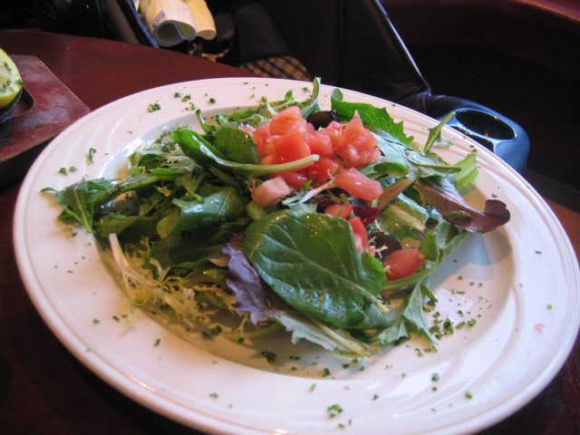
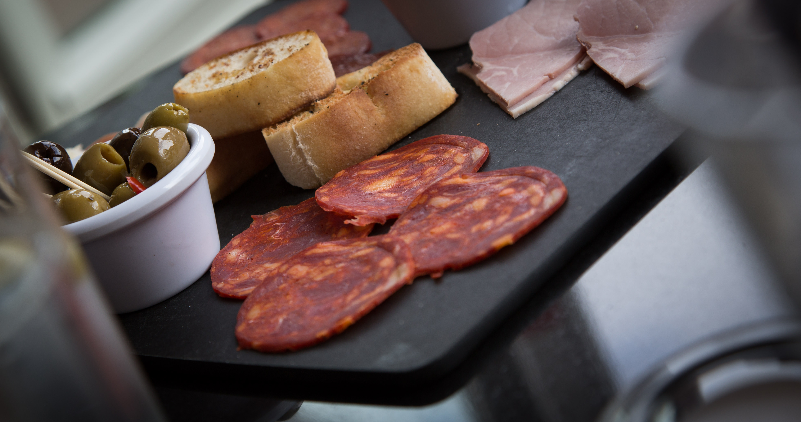

Descubre la Magia de la Cocina
Un viaje culinario a través de sabores, texturas y aromas.
Ver RecetasNuestras Creaciones


Ambiente Sonoro:
Un viaje culinario a través de sabores, texturas y aromas.
Ver Recetas

Ambiente Sonoro: